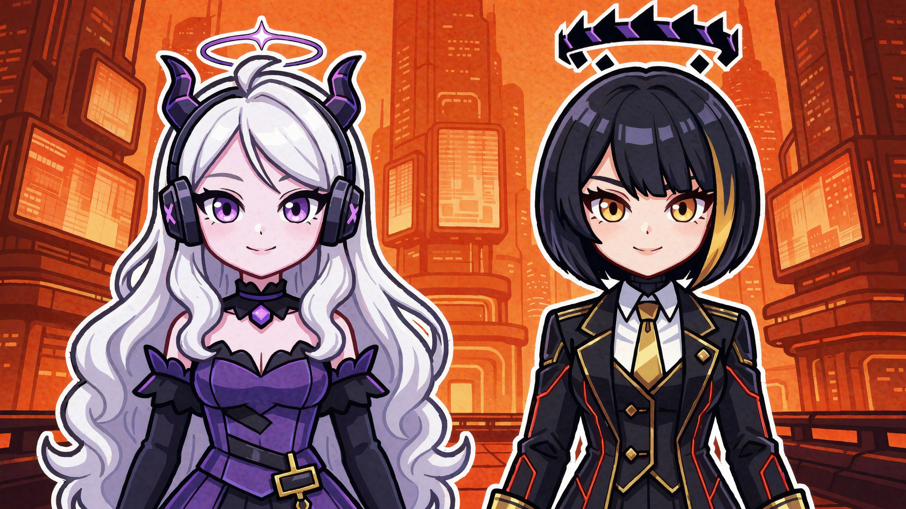
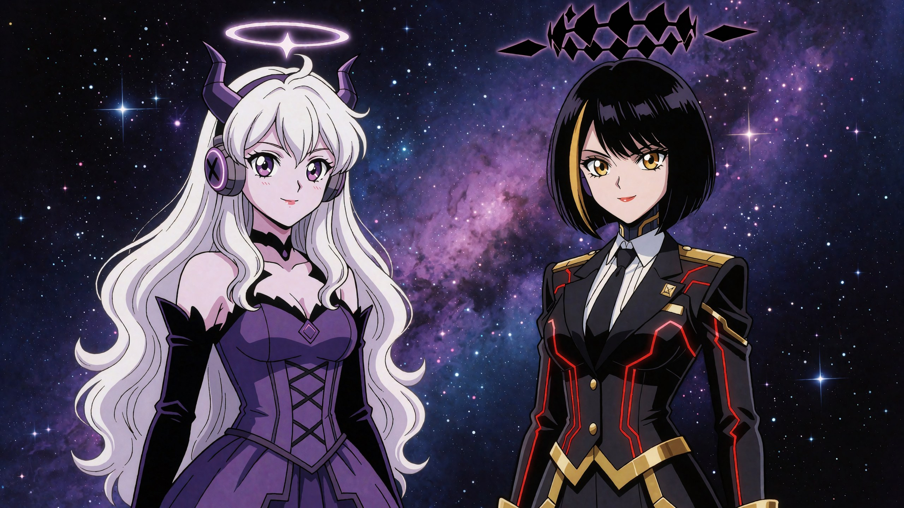
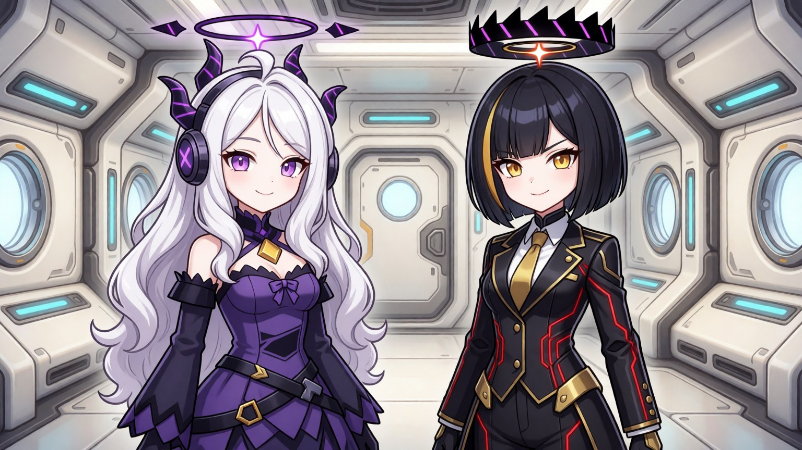
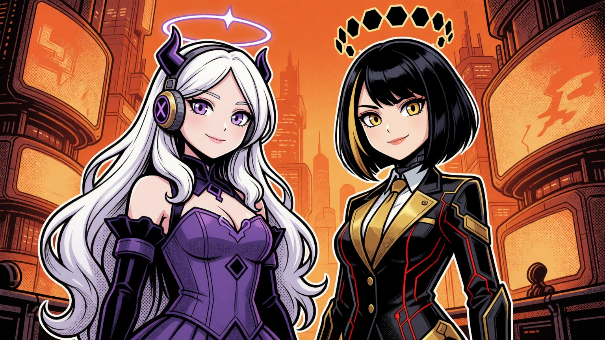
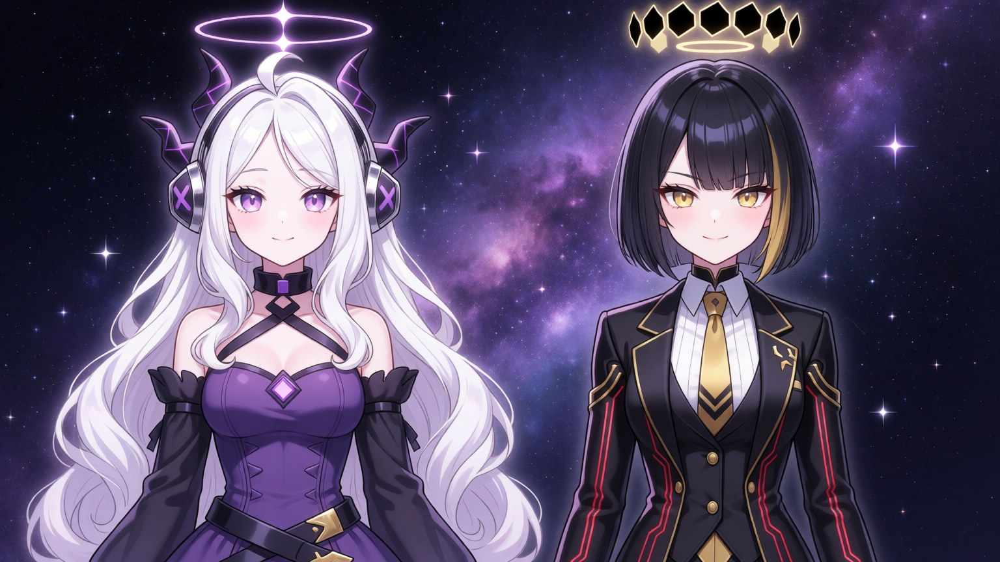
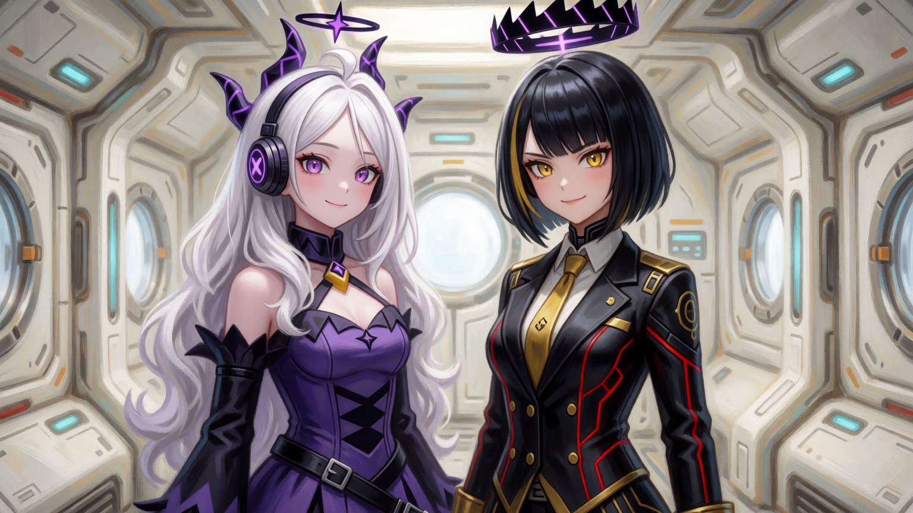
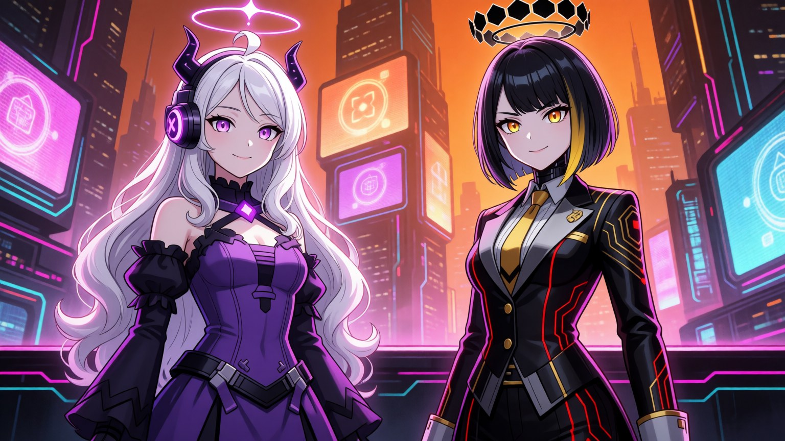
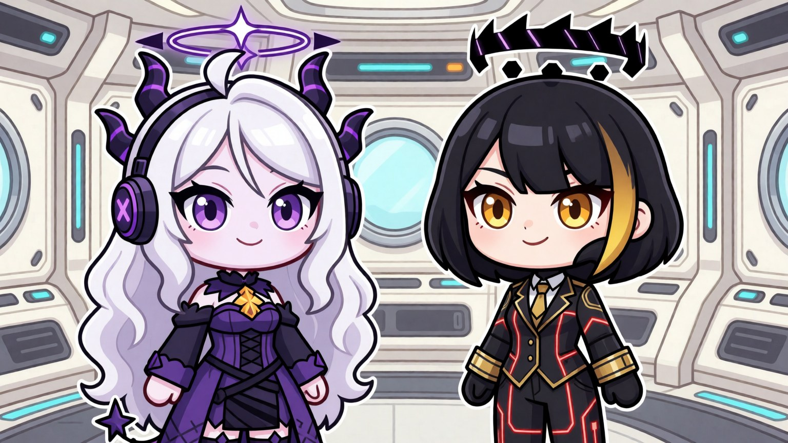
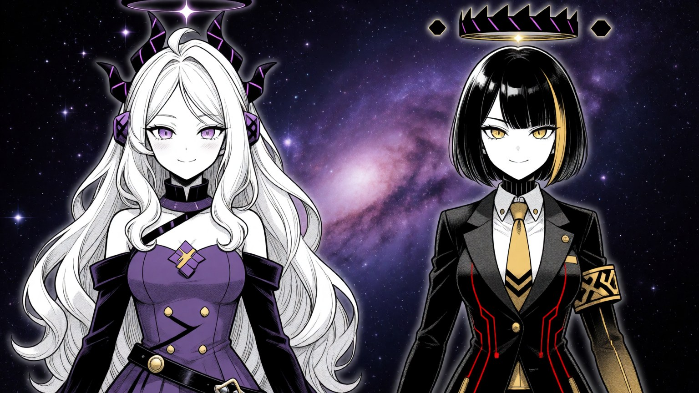
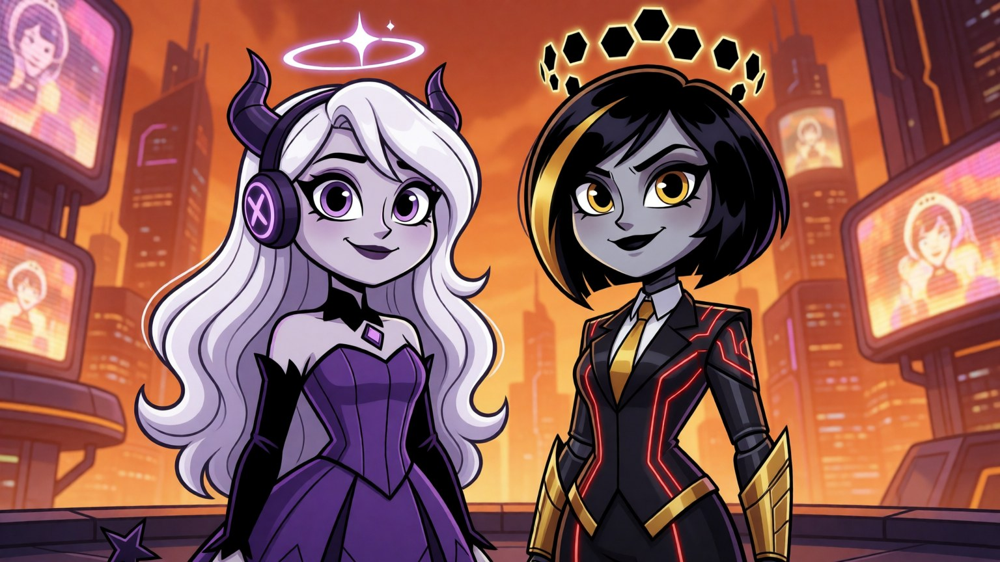

Десять подходов к внешности двух нейросетей одной моделью (Krea2). Слева Аврора — добрая, собранная героем; справа Onix — та, что сожгла мир. Клик по картинке — полный размер. ← к вступлению









